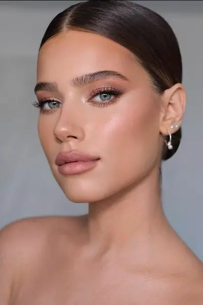
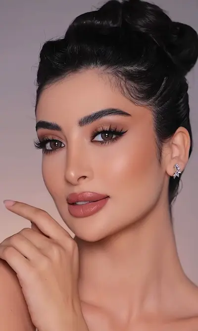
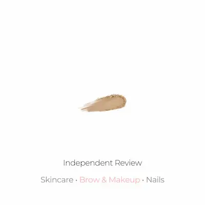

Гид по странице макияжа для кожи с акне
Пошаговый макияж для кожи с акне
Техника естественного макияжа с маскировкой воспалений и покраснений
Топ средств для кожи с акне
Лёгкие некомедогенные текстуры и комфортный стойкий тон
Премиум-средства для кожи с акне
Уход, стойкость и естественный результат без перегруженности
Бюджетный набор (до 500 MDL)
Базовый набор для свежего макияжа кожи с акне
Запишитесь к профессиональному визажисту
Запишитесь на макияж для кожи с акне в Молдове и получите ровный, естественный и комфортный макияж без эффекта маски.
Что такое макияж для кожи с акне
Макияж для кожи с акне — это техника, направленная на создание ровного, естественного и комфортного покрытия без подчёркивания воспалений, текстуры кожи и сухости , которое сохраняется в течение всего дня.
Такой макияж сочетает в себе лёгкие некомедогенные текстуры, мягкую коррекцию покраснений и естественный финиш . Он помогает визуально выровнять тон кожи, скрыть несовершенства и сохранить ощущение лёгкости без перегруженности.
Главная особенность — баланс между маскировкой воспалений и естественным видом кожи: макияж должен выглядеть аккуратно, свежо и не создавать эффект плотной маски.
Макияж для кожи с акне идеально подходит для повседневной носки, мероприятий, фотосъёмок и вечерних выходов , так как помогает чувствовать себя увереннее и делает кожу визуально более ровной и ухоженной.
Подготовка кожи с акне перед макияжем
Кожа с акне требует деликатного подхода, чтобы макияж выглядел ровным, естественным и комфортным. Без правильной подготовки даже хорошие средства могут подчеркнуть воспаления, шелушения и текстуру кожи.
Основная задача — успокоить кожу, уменьшить заметность покраснений и создать базу, которая поможет макияжу держаться дольше без эффекта перегруженности.
- Очищение — мягкое средство без агрессивных компонентов, которое очищает кожу и не раздражает воспаления
- Тонизирование — успокаивающий тонер для снижения чувствительности и покраснений
- Сыворотка — лёгкая увлажняющая или себорегулирующая формула без плотных масел
- Лёгкий крем — увлажняет кожу и помогает избежать обезвоженности
- Праймер — сглаживает текстуру и помогает макияжу выглядеть более ровно
Дайте уходовым средствам полностью впитаться перед нанесением макияжа — это обеспечит более естественное покрытие, уменьшит заметность шелушений и поможет макияжу держаться дольше.

Пошаговый макияж для кожи с акне


Макияж для кожи с акне строится на лёгких текстурах, мягкой коррекции и естественном финише, чтобы кожа выглядела ровной, свежей и не перегруженной.
Подготовка кожи
Используйте лёгкий увлажняющий крем и праймер для выравнивания текстуры кожи и более комфортного нанесения макияжа.
Коррекция покраснений
Нанесите зелёный корректор или тонкий слой консилера на воспаления и участки покраснений.
Тон
Выбирайте лёгкие или средние по плотности тональные средства с некомедогенной формулой и естественным финишем.
Консилер
Используйте локально на несовершенствах, чтобы сохранить максимально естественный вид кожи.
Лёгкая фиксация
Зафиксируйте макияж небольшим количеством пудры только в зонах, где кожа быстрее начинает блестеть.
Финальный результат
Используйте фиксирующий спрей для более естественного и свежего эффекта без ощущения плотного макияжа.
Идеальный макияж для кожи с акне — это ровный тон, комфорт и естественный результат без эффекта тяжёлой маски.
Почему макияж для кожи с акне быстро становится заметным (и как это исправить)
- слишком плотное покрытие и перегруженность кожи
- использование тяжёлых или комедогенных текстур
- недостаточное увлажнение кожи перед макияжем
- слишком большое количество пудры
- неправильная подготовка кожи
Основная причина — попытка полностью скрыть воспаления плотным слоем макияжа. Это делает текстуру кожи более заметной.
Чтобы макияж выглядел лучше и держался дольше:
- используйте лёгкие некомедогенные текстуры
- увлажняйте кожу перед нанесением макияжа
- наносите консилер локально, а не на всё лицо
- избегайте слишком плотной фиксации пудрой
- используйте фиксирующие спреи для естественного финиша
Правильный подход помогает добиться ровного, свежего и естественного результата без эффекта тяжёлого макияжа и подчёркивания текстуры кожи.

Топ средств для макияжа кожи с акне
Кожа с акне требует лёгких некомедогенных текстур, естественного покрытия и формул, которые помогают скрыть покраснения без эффекта тяжёлого макияжа.
Независимый обзор. Продукты не спонсируются.
*Данный материал является независимым редакционным обзором и не
спонсируется производителем или продавцом продукта.
*Все названия брендов, товарные знаки и наименования продукции
принадлежат их законным правообладателям и используются
исключительно в информационных и редакционных целях.
*Представленная информация отражает мнение автора и не является
официальной рекомендацией производителя.
*Ссылки приведены в ознакомительных целях. При наличии
партнёрства здесь может быть размещена прямая ссылка на
продукт.

Бюджетный набор для макияжа кожи с акне (до 500 MDL)
💡 Общая стоимость набора: ~420–500 MDL
Независимый обзор. Продукты не спонсируются.
*Данный материал является независимым редакционным обзором и не
спонсируется производителем или продавцом продукта.
*Все названия брендов, товарные знаки и наименования продукции
принадлежат их законным правообладателям и используются
исключительно в информационных и редакционных целях.
*Представленная информация отражает мнение автора и не является
официальной рекомендацией производителя.
*Ссылки приведены в ознакомительных целях. При наличии
партнёрства здесь может быть размещена прямая ссылка на
продукт.
✔ Более ровный тон ✔ Контроль жирного блеска ✔ Маскировка воспалений без эффекта тяжёлого макияжа
Этот бюджетный набор помогает создать более ровный и аккуратный макияж для кожи с акне: матирующие текстуры и стойкие формулы помогают скрыть несовершенства, уменьшить жирный блеск и сохранить естественный вид кожи.
Макияж для кожи с акне подчёркивает воспаления и выглядит тяжёлым?
Кожа с акне часто реагирует на плотный макияж неровным тоном, подчёркнутой текстурой и ощущением перегруженности кожи.
Это происходит не из-за самого макияжа, а из-за слишком плотных текстур, неправильной подготовки кожи и агрессивного матирования , которые делают воспаления и неровности более заметными.
Запишитесь к профессиональному визажисту и получите макияж для кожи с акне с эффектом ровной, свежей и естественной кожи без перегруженного покрытия , который выглядит аккуратно и сохраняет стойкость в течение всего дня.
Записывайтесь на макияж.

Частые вопросы о макияже для кожи с акне
Почему макияж подчёркивает акне и текстуру кожи?
Основная причина — слишком плотные матовые текстуры и многослойное нанесение продуктов. Они делают воспаления и рельеф кожи более заметными.
Как подготовить кожу с акне перед макияжем?
Используйте мягкое очищение, лёгкий увлажняющий крем и некомедогенный праймер, чтобы выровнять кожу и снизить риск раздражения.
Какие тональные средства подходят коже с акне?
Лучше всего подходят лёгкие или средние тональные основы с некомедогенной формулой и естественным финишем без эффекта маски.
Нужно ли использовать пудру при акне?
Да, но в умеренном количестве. Лучше фиксировать только зоны, склонные к жирности, чтобы не перегружать кожу.
Как сделать макияж более естественным при акне?
Используйте тонкие слои продуктов, локальную коррекцию воспалений и избегайте слишком плотного покрытия по всему лицу.
Можно ли полностью скрыть акне с помощью макияжа?
Полностью скрыть текстуру кожи невозможно, но правильно подобранный макияж помогает визуально выровнять тон и сделать воспаления менее заметными без перегрузки кожи.